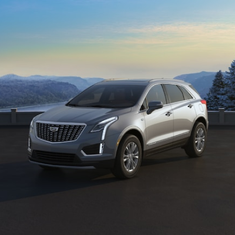

C A D I L L A C X T 5
당신의 모든 감각을 자극하는 세단 완벽한 디자인과 드라이빙 퍼포먼스의 만남
CT5의 빼어난 디자인은 주행 시에도, 멈춰 있는 순간에도 당신의 모든 감각을 만족시킵니다.
PERFORMANCE
3.6L V6 ENGINE
프리미엄 럭셔리 트림과, 스포츠 트림에 기본 사양으로 장착되는
3.6L V6 엔진은 최고출력 314마력, 최대토크 37.4kg·m 성능을 발휘합니다.
9-SPEED AUTOMATIC TRANSMISSION
9단 전자 정밀 시프트(EPS) 변속 방식을 적용하여 간단한 동작으로 주차에서
주행 상태로 전환됩니다. XT5는 변화하는 도로 상황에 빠르게 반응합니다.
ALL-WHEEL DRIVE
4륜 구동 장치(AWD)는 비, 눈, 얼음 등 다양한 도로 상태에서도 운전자가 안정감을 유지하며.
안전하게 도로 위를 주행할 수 있도록 도와줍니다.
SAFETY
LANE KEEP ASSIST WITH LANE DEPARTURE WARNING
차선 유지 및 차선 이탈 경고 시스템은 감지된 차선을 의도치 않게 벗어난 경우 짧고
부드러운 스티어링 휠 회전으로 운전자에게 경고 합니다.
방향 지시 등을 사용하고 있거나 의도적으로 차선을 이탈 하는 것을 시스템이 감지한
경우에는 시스템 경고가 발생하지 않습니다.
FORWARD COLLISION ALERT
전방 추돌 경고 시스템은 전방 교통 상황을 모니터링하여 차량이 선행 차량과의
전방 충돌을 감지하여 운전자가 신속히 대응할 수 있도록 경고합니다.
또한, 선행 차량과의 거리가 너무 가까운 경우에도 테일게이팅 경고를 제공할 수 있습니다.

AUTOMATIC PARKING ASSIST WITH BRAKING
제동 기능이 있는 자동 주차 보조 시스템은 평행 또는 수직 주차 공간을 살펴본 후 제한된
제동 기능을 사용해 해당 주차 공간으로 차량을 조향 및 제동하여 주차할 수 있습니다.

EXTERIOR FEATURES
VISIONARY LIGHTING
XT5의 고급 LED 헤드램프는 시각적인 것 그 이상을 보여줍니다.
인텔리빔 기술이 탑재된 LED 헤드램프와 코너링 램프 기능은
주간 주행뿐 아니라 야간 주행도 자신 있게 만들어 줍니다.

RADIANT LED TAILLAMPS
밝고 우아하며 섬세하고 세련된 LED 테일램프는 도로상에서
당신의 존재를 돋보이게 하고, 사람들의 눈길을 사로잡습니다.
PERFORMANCE STANCE
프리미엄 럭셔리 트림에는 20인치 6-스플릿 스포크 폴리시드 안드로이드 마감 알로이 휠이, 스포츠 트림에는 20인치 12-스포크 다이아 몬드 컷 다크 안드로이드 마감 알루미늄 휠이 적용되었습니다.

REAR CAMERA MIRROR
REAR CAMERA MIRROR
위대함에 어울리는 인테리어. 캐딜락의 디자이너는 컷-앤-소운 방식 의 가죽과 원목 등의
천연 소재 또는 갈바노 엑센트와 카본 파이버 엑 센트를 활용해 강렬한 마감을 완성했습니다.
HEATED AND VENTILATED SEATS
때론 시원하게, 때론 포근하게. 운전석과 조수석의 열선 및 통풍 시트로
당신의 출퇴근길은 언제나 편안한 드라이브가 됩니다.
ROOM FOR POSIBILITY
60/40 분할 접이식 뒷좌석을 완전히 접으면 1,784L의 공간이 생깁니다.
이 기능으로 필요한 모든 짐을 실을 수 있습니다

GALLERY
- 

TRIM LEVELS
- PREMIUM LUXURY
- ₩69,100,000
- 3.6L V6 엔진 / 9단 자동 변속기
- 20인치 6-스플릿 스포크 알로이 휠
- 사각지대 경고 및 차선변경 경고
- 후방 통행 차량 감지 및 경고 시스템
- 안전 경보 햅틱 시트
- 자동 비상 브레이크 및 전방 추돌 경고
- 울트라 뷰 파워 선루프
- 매립형 네비게이션 장착 캐딜락 유저 익스피리언스
- 보스 퍼포먼스 시리즈 14 스피커 시스템
- 리어 카메라 미러
- 무선 충전 기능
- 조그 기능 로터리 컨트롤러
- SPORT
- ₩61,400,000
- (PREMIUM LUXURY 사양 포함)
- 스포츠 컨트롤 AWD 시스템
- 20인치 12-스포크 다이아몬드 휠
- 블랙 유광 루프 레일
- 실시간 댐핑 컨트롤 서스펜션
- 투명 렌즈 테일램프
- 전좌석 세미 아닐린 가죽 시트
- 초극세사 스웨이드 헤드라이너
- 자동 안전벨트 조임
- 어댑티브 크루즈 컨트롤
- 나이트 비전
SPECS
- 엔진 : V6 가솔린 자연흡기 엔진
- 배기량(cc) : 3,649cc
- 최고출력(ps/rpm) : 314 / 6,700
- 최대토크(kg·m/rpm) : 37.4 / 5,000
- 공인연비(km/ℓ) : 복합 연비 8.0 (도심 6.9 / 고속도로 10.0)
- 에너지 등급 : 5등급
- 구동방식 : 전자식 제어 4륜구동 (모드 선택)
- 변속기 : 자동 9단